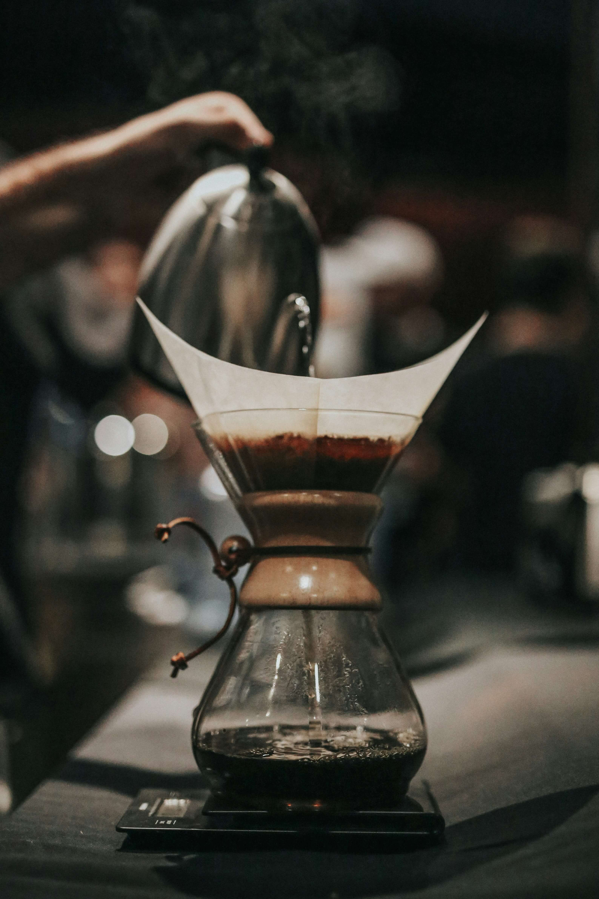

The Perfect Cup of Coffee

Unleash the Bean Bliss!
Forget your burnt, bitter brews! This guide unlocks the SECRET to a truly **perfect cup of coffee**. Forget bland, milky concoctions, we're diving deep into the **aroma, body, and balance** that will awaken your taste buds. Coffee newbie? Fear not! This recipe is your **caffeine compass**, guiding you from bean basics to brewing bliss. We're talking smooth, complex flavours, perfectly extracted goodness, and an **in-cup experience** that will leave you wanting more.
Ready to reimagine your morning ritual? Dive in and become a coffee-brewing legend!
The Essentials:
- Freshly roasted coffee beans (choose your favourite!)
- Coffee grinder (burr grinder recommended for consistent grind)
- Coffee brewing device (French press, pour-over, AeroPress, etc.)
- Filtered water (heated to the appropriate temperature for your brewing method)
- Scale (optional, but highly recommended for accuracy)
Step-by-Step:
- Grind your beans: Grind your coffee beans just before brewing for optimal freshness. Use a grind size suitable for your chosen brewing method. (Finer grind for espresso, coarser for French press)
- Prepare your device: Preheat your brewing device and filter according to the manufacturer's instructions. This helps ensure even extraction and prevents heat loss.
- Measure and dose: Use a scale to measure your coffee and water accurately. A good starting point is a 1:16 coffee-to-water ratio (e.g., 15g coffee for 240ml water). Adjust based on your taste and brewing method.
- Bloom the coffee: Pour a small amount of hot water over the grounds, just enough to saturate them. Let it sit for 30 seconds to release CO2 and ensure even extraction.
- Slowly pour the remaining water: Use a slow, steady pour to evenly extract the coffee's flavours. Aim for a consistent flow and avoid pouring directly on the filter.
- Let it brew: Steep the coffee for the recommended time based on your brewing method. Don't over-extract, as it can lead to bitterness.
- Enjoy! Serve your coffee immediately and savour the aroma and flavour. Experiment with different beans, grind sizes, and ratios to find your perfect cup.
Tips for the Coffee Connoisseur:
- Store your coffee beans in an airtight container away from light and heat.
- Experiment with different water temperatures. Generally, hotter water extracts more flavour, but can also lead to bitterness. Start cooler and adjust if needed.
- Cleaning your brewing equipment regularly ensures optimal flavor and prevents build-up.
- Explore different brewing methods to discover new flavour profiles and experiences.
- Most importantly, have fun and enjoy your coffee journey!
Why waste money on subpar coffee when you can make an exquisite cup at home!
Go back and find another great recipe